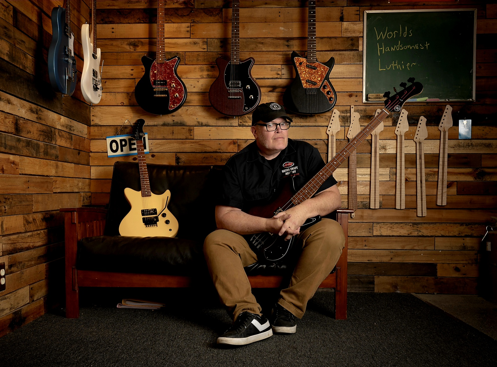
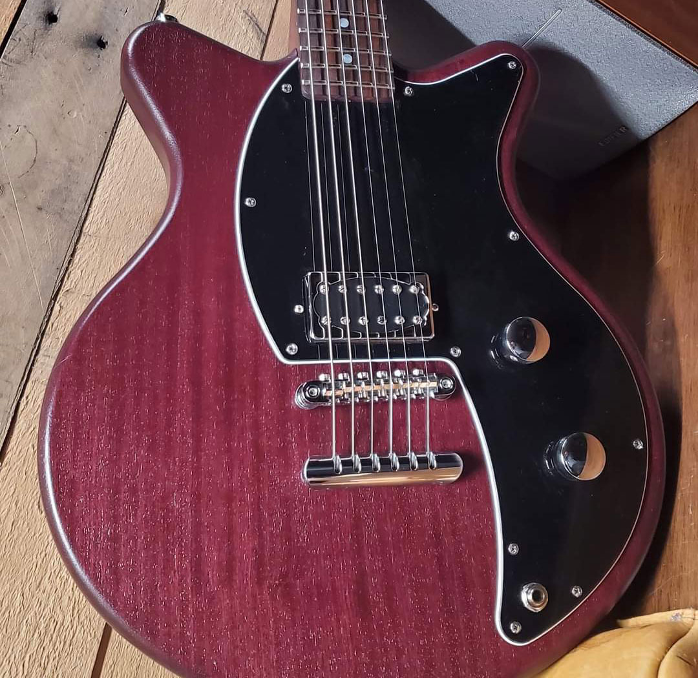
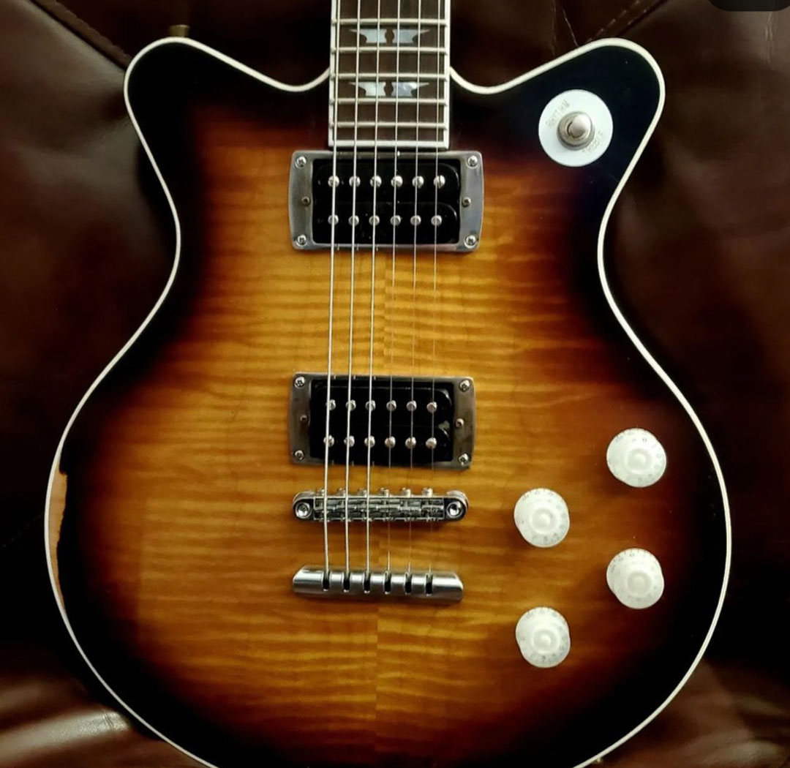
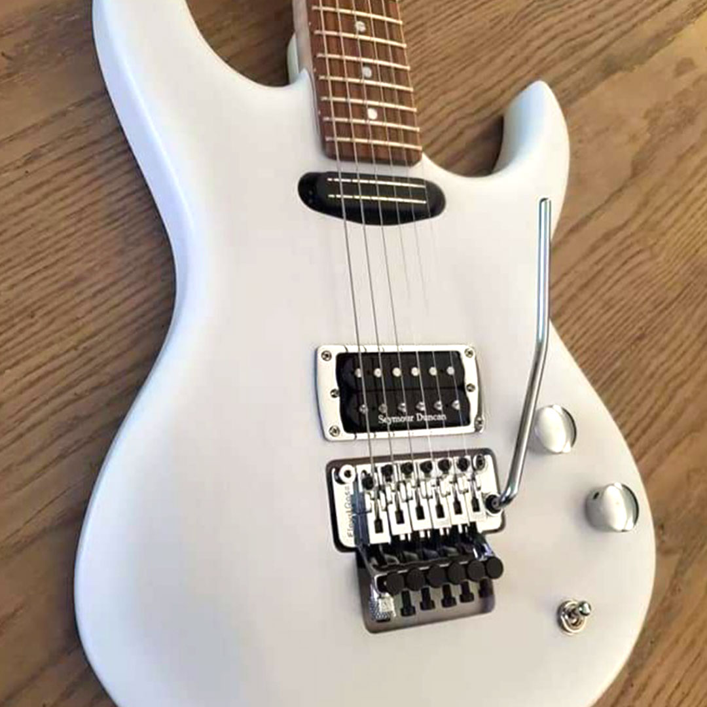
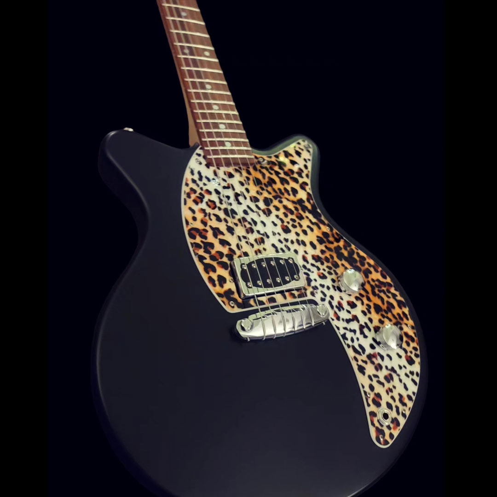
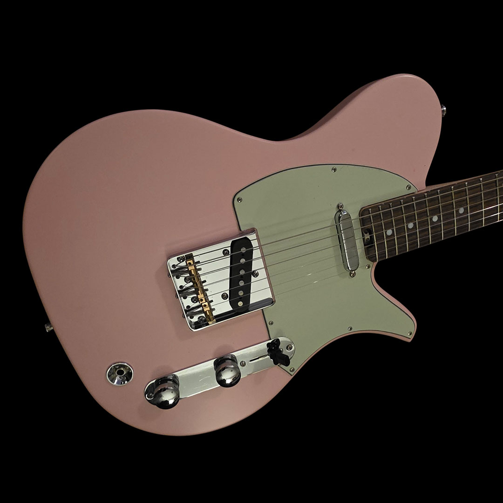

K. Butler Guitars
Unleash your sound, crafted to perfection



K. Butler, a name synonymous with unparalleled artistry and precision in the world of guitar making. With over three decades of experience, K. Butler has become a revered figure among musicians and collectors alike. Born with an innate passion for music and a natural talent for craftsmanship, K. Butler embarked on a journey to redefine the boundaries of custom electric guitar creation.
 The ’64 V2K. Butler Guitars
The ’64 V2K. Butler Guitars The Shark GuitarK. Butler Guitars
The Shark GuitarK. Butler Guitars
The MSPP5K. Butler Guitars
The CheetahK. Butler Guitars
The WranglerK. Butler Guitars